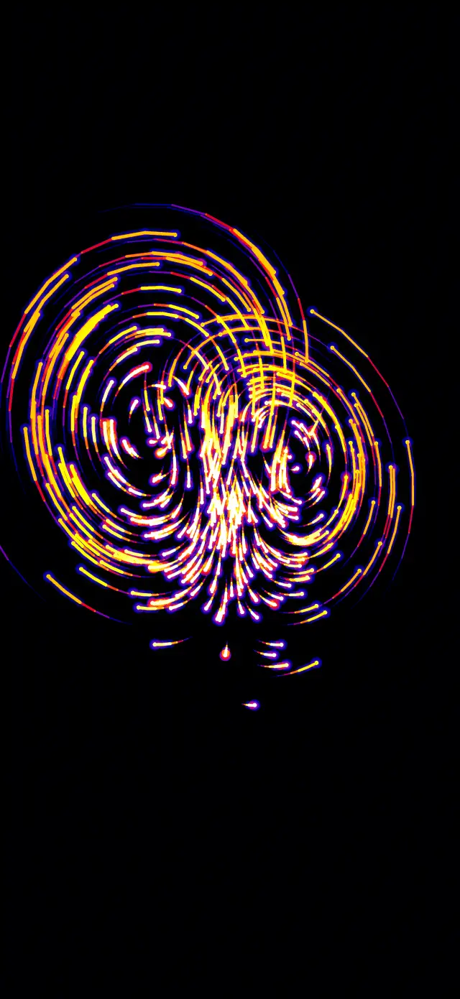
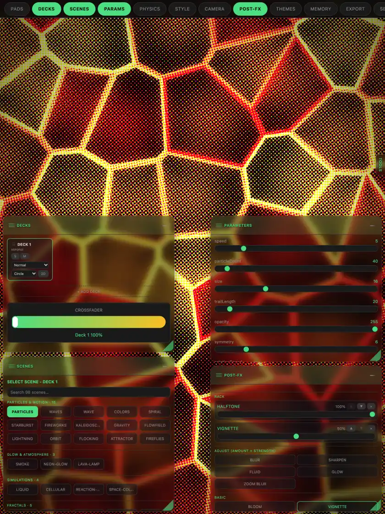

Your phone runs the visuals. You keep DJing.
Plug your iPhone or iPad into the screen, turn on the mic, and the visuals move with the music all night.

Who it's for
Mobile and weddings
A full light show that fits in your pocket. Set up in the time it takes to plug in a cable.
Bars and clubs
Moving visuals on the screens in the room, every night, with no one at a laptop.
Bands
The screen behind you hits with the kick and swells with the bass, right along with the set.
Streamers
A moving backdrop that follows your music and changes with every track.
It listens
The mic hears the room, and the picture follows the beat, the bass and the tempo. Sound is analyzed on the device and never recorded.
It's already in your bag
Your iPhone or iPad is the whole rig. No laptop, no controller, no extra software.
It runs the night for you
Pick your looks and let it go. It keeps moving with the music while your hands stay on the decks.
How it hooks up
- Connect the screen. An HDMI cable and adapter into a TV, projector or LED wall. Or AirPlay to an Apple TV or AirPlay-ready TV.
- Turn on the mic. Set your phone where it can hear the speakers and tap MIC. Adjust Sensitivity until the picture hits with the kick.
- Pick your looks and play. Choose a look or a whole show and let it run. Change it any time from your phone.

Plans
Free to download. Plays up to 1080p at no cost. 4K, Ultra and All Access unlock more.
Questions
Does it record me?
No. When MIC is on, the app turns the sound into levels, beats and tempo on your device. Nothing is recorded, saved or sent. Read the privacy policy.
Which devices does it run on?
iPhone and iPad, plus Mac and Apple Vision Pro. A recent device gives you the smoothest 4K.
What cables do I need?
An HDMI cable and an adapter for your device: a USB-C to HDMI adapter for USB-C iPhones and iPads, or Apple's Lightning Digital AV Adapter for Lightning iPhones. An adapter with a charging port keeps your phone powered all night.
Do I need Wi-Fi?
No. The visuals run on your device, so a cable and the mic are all you need. AirPlay and linking your own devices use the local network, with no internet needed for the show.
Is there a flashing lights warning?
Yes. Some looks flash quickly and use strong contrast. If you or anyone watching has photosensitive epilepsy or is sensitive to flashing lights, choose calmer looks, keep the intensity low, and stop right away if anyone feels unwell.
Join the beta
Pocket VJ Pro is in testing now. Send us a note and we'll send you an invite.